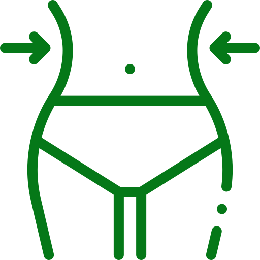
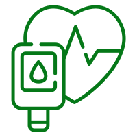

Beneficios del aceite de aguacate
Disminuye el colesterol y mejora la salud cardiovascular
El aceite de aguacate es rico en grasas insaturadas que pueden ayudar a reducir el colesterol LDL, conocido como "colesterol malo".
Beneficioso para la salud de la piel y el cabello
Las vitaminas del aceite de aguacate pueden ayudar a mejorar el tono de la piel y reducir la aparición de líneas finas y arrugas.
Puede ser usado para freir
El aceite de aguacate tiene un punto de humeo más alto que el aceite de oliva, lo que lo convierte en una mejor opción para freír y asar a la parrilla.
Favorece en la pérdida de peso
Puede mejorar la salud digestiva y promover la eliminación de toxinas.
Alto en nutrientes
Nutrientes esenciales como grasas monoinsaturadas saludables, vitamina E y antioxidantes.
Ayuda a personas con diabetes
Debido a sus propiedades antiinflamatorias.